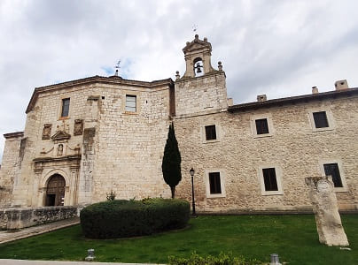
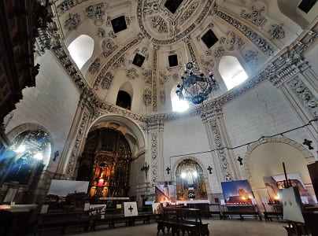
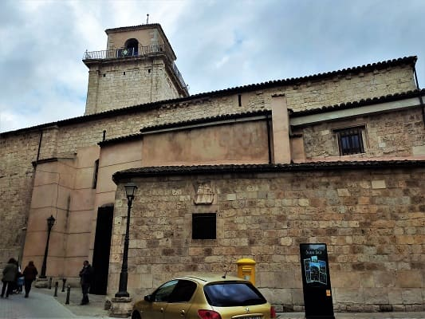
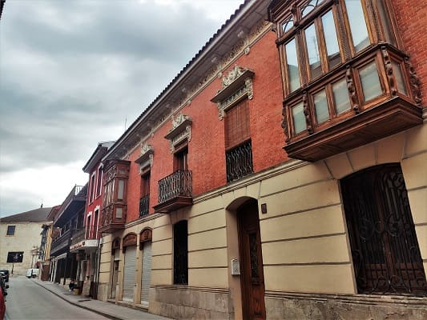
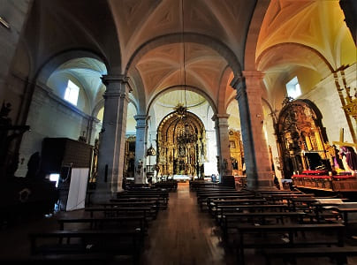
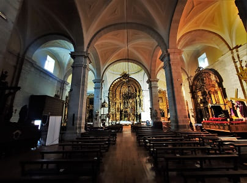
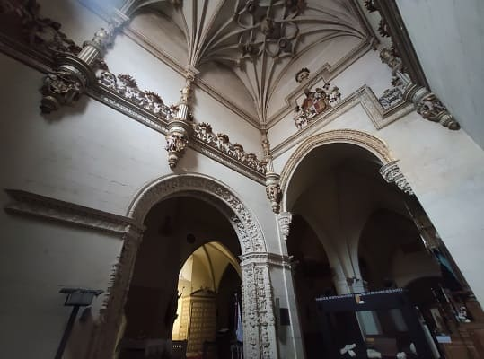
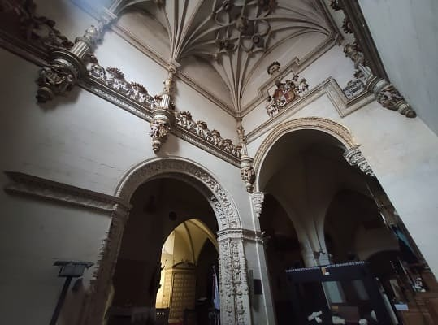

I would start by visiting the town of Castromonte, which has a valuable church and a large Plaza Mayor. It had been recently restored and parts of the square still remained.

Later I would approach the first important town, Rueda. This town is known for its wine tradition. In it there are many of the main wineries that produce wine with the Rueda designation of origin, comparable in importance to Ribera de Duero.
The most notable building in the town is the church of Nuestra Señora de La Asunción. This church has a different structure from any church as it looks more like a fortress palace than a church. It has two towers that end in pinnacles and a baroque façade more typical of a palace than a church. Inside it stands out for the breadth of the nave, with several baroque altarpieces of great value. The walls are painted and plastered white and it shows how the towers have been added from the old Mudejar church. On the same street there are palatial buildings until you reach another of the important buildings such as the hermitage of Cristo de las Batallas, with a hexagonal floor plan.


Then I will go on to do the route of the castles, in which we will change provinces, going to Segovia. The next town will be Coca with a unique design within the Spanish castles.


It is in the Mudejar style and has been modified over the years. Today there is a FP school inside and there are guided tours where I was able to walk around the outer walls as well as enter the interior of the towers. There are photo images and engravings from recent times as well as its palatial courtyard completely made from scratch. This area was badly damaged before the restoration.


Other monuments that can be visited are the wall, which is being restored, the gate of the town and the town hall and the main square of the town. This square is referenced to Theodosius, one of the Spanish Roman emperors. He was born in this city, called Cauca in its Roman origin.


The church of the town, that of Santa María la Mayor is located in the Plaza Mayor. In addition, there are still vestiges of the tower of an ancient church, and the tower of San Nicolas, one of the highest in the region.


After Coca I would go to visit Iscar. Iscar is a fairly large town but it does not stand out especially in terms of heritage, but it does have a castle. The castle has been restored but is located away from the center on top of a hill. It has a couple of outstanding churches, the main one, the church of Santa María de los Martires and the church of San Miguel, in a Romanesque style that only maintains its exterior. Iscar Castle can be seen from the town and has undergone several restorations. This castle is from after the reconquest, which was made taking advantage of previous Arab watchtowers to defend the territory. Currently different activities are held and there is a craft brewery inside. In the images, the town hall, the church of Santa María and the castle.


Then I would continue through Segovian lands to go to one of the most important towns with the most history in the province. Like the two previous towns, it has a castle. This castle is of a superior importance both patrimonially and historically. This town is Cuellar and not only does it have a castle, as in the case of Coca, but it also contains a unique architectural ensemble in the network of its streets in the historic center and its religious architecture. In addition, the wall and different doors and arches of the wall inside the town are well preserved.
The entrance to the castle is not very expensive and is guided. This visit is carried out in the form of a play in which there is a story with different characterized characters who tell a story that happened in the castle. The castle was owned by the Dukes of Albuquerque. In the last century, the heirs ceded part of the property to the state to carry out an expensive restoration and save it from ruin, in return they kept some sectors of the castle. It also serves today as a secondary school.

Near the castle is the church of San Martín, seen in the first image, which is currently owned by the town hall. Nearby is the old San Basilio hospital, which today is a restaurant and only the façade remains. If we continue around the castle we can visit the remains of the church of Santiago, of which the apse, the door of Santiago (one of the main entrance doors) to the city) and the wall.


Nearby is the church of San Esteban and the necropolis of this church where the excavations have been left in sight with protection in some cases. The church of San Esteban is the most important and most valuable church in my view in Cuellar. This church contains tombs of several of the nobles who ruled the city in medieval times. These tombs are topped with Arab plasterwork and Mudejar Gothic style like the rest of the church. In addition to this church in Cuellar, there is San Andres, which is larger and in the same Mudejar Gothic style that you would see at the end of the visit.


Going down the slope, I would find the palace of Don Pedro I, which has one of the most valuable Mudejar coffered ceilings in Cuellar. And further down you would reach the Plaza Mayor, where the town hall is .


In the square there is also the church of San Miguel. This church has a very colorful and valuable baroque altarpiece. The most beautiful in the city from my point of view. The town hall, being Holy Week, was decked out with the flags of each of the brotherhoods that the city has.


Near the town hall is the convent of Trinidad which is now in private hands and where only the façade of the building can be seen. I would also stop at the remains of the church of Santa Marina and to complete the visit I would go to the church of Santa María de la Cuesta whose interior had just been restored this year.


Very close the church of El Salvador with an original Mudejar tower and an almost complete apse that, due to the number of Mudejar churches, goes unnoticed. Another of the important churches is the church of San Pedro, which is quite large and similar in style to El Salvador. Also in the last image you can see the Hospital de Santa Maria de la Magdalena church.


Finally, the most important and largest church in Cuellar, the church of San Andrés which gives its name to one of the city gates, the Cuellar Arch. Dating from the 13th century, although of earlier construction, it was built in stone and brick masonry, on top of a previous ashlar building belonging to the Romanesque, of which it preserves a plinth on its main façade, as well as the doorway of the same façade and of the Gate of San Andres. Despite the various modifications suffered over time, it currently retains its original layout. Inside, various Mudejar frescoes stand out, as well as a Muslim-inspired stonework door and an extensive collection of sculptures. There is also the Virgin of La Rochela, transferred from the old hospital of San Basilio mentioned above, which is the most important in all of Cuellar to which numerous miracles are attributed.


Finally, outside the town is the Sanctuary of the Virgen del Henar. This sanctuary has a chapel adorned with a dome full of religious frescoes and a rather sober Baroque altarpiece. Unlike the fate of La Rochele, the virgin would be stolen by the French who would damage it and remove all the silver details.

Once you have seen Cuellar and following the route of the castles, you will head towards Peñafiel, to the north, one of the most important towns in the province. This town is known for its castle on the top of the mountain closest to the town.
I park far from the river at the convent of Santa Clara. I was lucky to be able to enter and see the church of the convent. In it there was a mini-museum of the steps of Holy Week. The plant is circular and its dome is in the baroque style with a multitude of details. It is well worth going in.


Once we have crossed the river Duratón by the medieval bridge that crosses it, we enter the main square of the town with the church of Santa María de Mediavilla and the Sacro museum strong> where there are some altarpieces or remains of churches of great value.



Pulling towards the Church of San Miguel we can see several palatial houses, with different details referring to the city on their façade.


The church of San Miguel is Gothic and inside the altarpieces are in the Baroque style. Several of them have undergone a recent restoration and there are different panels that show you the before and after. It is in the Renaissance style, although it keeps some Romanesque elements from the old church that it replaced.
 

Near this church is the convent of San Pablo, which is the most important religious building in the city. It is built on the historical remains of the Alcazar of Alfonso X. It dates from the 13th century. In the 14th century it became a monastery. The location remains of the fortress, one of the bases of an old tower that today supports the stone belfry executed in two bodies and its parade ground, which is currently the cloister of the Convent.


In it is the chapel of the infant Don Juan Manuel. He descended from the Spanish royal family. In it there are up to 18 shields of different sizes and all kinds of details such as small angels that hold the shields. Also in a showcase are objects of this gentleman.
 


Then I would go to the Coso de Peñafiel. This is the square where all the celebrations of the city take place and where the town hall is located. Called arena for the absence of tiles or asphalt in it since it is also used to hold bullfights or bullfights.

He would head to Palencia where the rural house where he would sleep was located. Going through Pesquera de Duero with a beautiful Plaza Mayor and an arch leading to the town.
Also by Encinas de Esgueva, a town with a castle belonging to the Aguilar family, built at the end of the 14th century, where Enrique III lived at some point at the time when Burgos was the capital of the kingdom of Castile. It also has the church of San Mames, which has a highly valuable Baroque altarpiece.


Finally, it would pass through Baltanas, a town renowned for housing the Cerrato Castellano museum where different exhibitions are held. In it is the Hospital de Santo Tomás palace, a symbol of the town. A palace with a baroque façade with two large shields and a very sumptuous patio. It also has the church of San Millan in the Gothic style. With a very elaborate nave and the hermitage of the Virgin of Revilla. This hermitage has as a curiosity that it houses the figures of the first Bethlehem that is known in the Iberian Peninsula. Specifically two carvings belonging to the Flight into Egypt by Saint Joseph, the Virgin and the child Jesus. It was recovered from a robbery last century in which two other figures were lost and have not been found. Although I was there for no more than 1 hour, it is well worth spending a whole afternoon to see this beautiful town.


My destination would be very close, Quintana del Puente where I would spend the night.

© 2016 - All Rights Reserved - Designed by Sergio López Martínez
El sitio se mantiene gracias a la publicidad, por favor Desactiva Adblock para seguir navegando
He desactivado Adblock![[Valid RSS]](https://www.onepointsync.com/wp-content/uploads/2016/08/valid-rss-rogers.png "Validate my RSS feed")